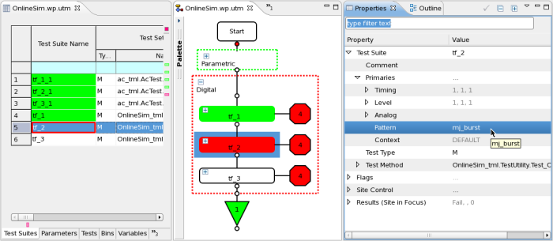
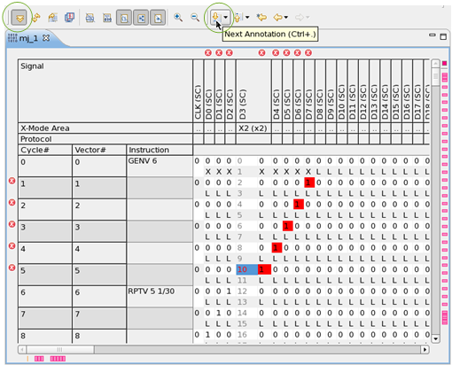
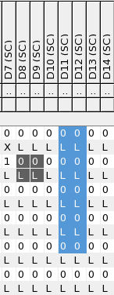

Debugging patterns efficiently
This topic describes how you can debug patterns fast and efficiently after you experience a failing test suite, and the failing test was executed by a device specific pattern.

The topic focuses on the following steps:
- Quick steps to open the related pattern
- Analyzing the results
- Editing the pattern
Quick steps to open the related pattern
- On the Properties view select the property .
- Click F3.
Depending on the failing pattern:
- The Pattern explorer opens.
- The Pattern editor opens and shows the related pattern burst.
- Select the failing pattern.
- Click F3.
The related pattern or subroutine opens in the Pattern editor.
Analyzing the results

- On the toolbar, click
 to switch to the expand mode, see Collapsed and expanded mode and Pattern Editor.
to switch to the expand mode, see Collapsed and expanded mode and Pattern Editor. - Quickly jump to the next annotation:
- Use the buttons of the Annotation toolbar
- Press Ctrl+. (dot)
- Click the marker of the annotation bars
- Find the right location:
- Go to signal or cycle: Press Ctrl+L
The Go to window opens.

- Find a location: Press Ctrl+F
The Find / Replace window opens.

- To find the next occurrence press
Ctrl+J
or right-click and, on the context menu, select Incremental Find Next.
- To go back to the previous occurrence press
Shift+Ctrl+J
or right click and, on the shortcut menu, select Incremental Find Previous.
- Go to signal or cycle: Press Ctrl+L
Editing the pattern
Note To undo any of the following steps,
press Ctrl+Z.
- To copy or paste from or to any area use
Ctrl+C or
Ctrl+V

- To edit a single value:
- Select the cell.
- Press Backspace, to activate the
- Press Ctrl+Space to use the Content Assist
and edit the full selection list.

- To to replace your failures with something you can define, on the menu click .

Functional changes
- Introduced in SmarTest 7.1.3